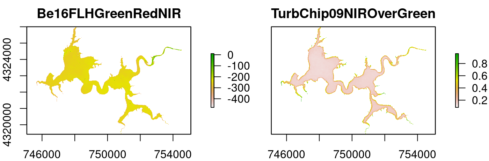

The goal of waterquality is to convert satellite-reflectance imagery to a host of pre-defined water quality algorithms designed for the detection of cholorophyll-a, blue-green algae (Phycocyanin), and Turbidity. This package is able to process the following sensor configurations: WorldView-2, Sentinel-2, Landsat-8, MODIS, and MERIS sensors.
Installation
You can install waterquality from github with:
# install.packages("devtools")
devtools::install_github("RAJohansen/waterquality")Example
The main function in this package is wq_calc():
library(waterquality)
library(raster)
#> Warning: package 'raster' was built under R version 3.5.1
#> Loading required package: sp
s2 = stack(system.file("raster/S2_Harsha.tif", package = "waterquality"))
s2_two_alg = wq_calc(s2, alg = c("TurbChip09NIROverGreen", "Be16FLHGreenRedNIR"), sat = "sentinel2")
#> Be16FLHGreenRedNIR calculated!
#> TurbChip09NIROverGreen calculated!
plot(s2_two_alg)
To learn more read the “Introduction to the waterquality package” vignette.
Package Contributions
We encourage users to submit issues and enhancement requests so we may continue to improve our package.
Futhermore, if you have a water quality algorithm that was not on our list, and you would like for it to be included in our package please email me at richard.johansen@uc.edu.